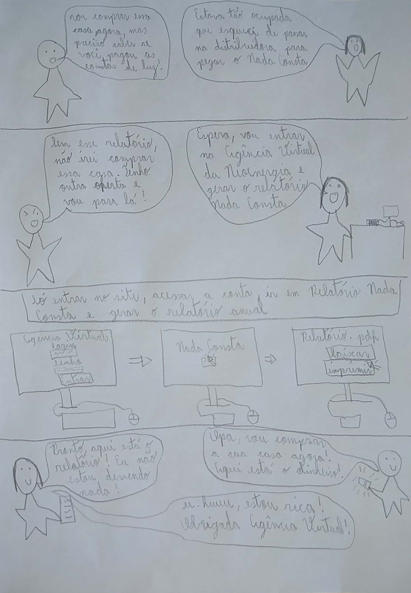
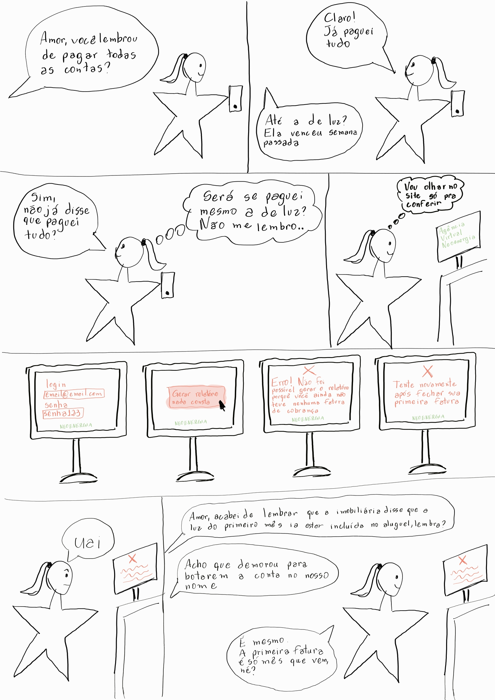

Planejamento da avaliação do Storyboard
Introdução
O Storyboard é uma forma de prototipação de baixa fidelidade, em que são utilizados desenhos que mostram a evolução de um usuário na realização de uma tarefa, indicando um caminho ideal para concluí-la com sucesso. Ao ser colocado junto com os cenários, traz uma riqueza de detalhes e informações muito maior para o projeto.
Suas principais vatangens ao ser executado são: baixo custo para ser desenvolvido, identifica requisitos, fácil comunicação e avalia vários conceitos do design. Nesse documento, será feita a descrição de como será feita a análise e avaliação dos storyboards desenvolvidos pela equipe.
Objetivos da avaliação
Estaremos realizando essa avaliação do storyboard com o objetivo de fazer uma exploração de ideias e projetar soluções juntamente com o usuário. Com isso, esperamos ao final ter insumos suficientes para elaborar uma melhoria das funcionalidades dentro do sistema.
Metodologias de avaliação dos Storyboards
Dentro do nosso escopo de formas de avaliações, chegamos a um entendimento de que a forma mais adequada para o nosso projeto de se avaliar o storyboard são com entrevistas com os usuários, fazendo uma investigação técnica.
Assim, começamos o processo de estruturação montando um termo de consentimento específico para a entrevista, fizemos a análise de ferramentas necessárias, definimos um roteiro de perguntas a serem utilizadas para a avaliação, podendo serem acrescidas mais caso seja de valia para a avaliação e fizemos a escolha de perfis para a entrevista.
Recrutamento dos participantes e cronograma das entrevistas
Dentro da atividade de Perfil do Usuário e das Personas, conseguimos identificar características necessárias para realizar uma entrevista com um usuário. Sendo assim buscaremos dois perfis maiores de 18 anos, de diferentes faixas etárias e que sejam responsáveis pelo pagamento da conta de luz de sua residência.
Para fazer o recrutamento, utilizamos grupos para divulgar que tenham pessoas de acordo com os perfis indicados acima. Além disso, fizemos convite a pessoas conhecidas que encaixam com o perfil buscado.
O cronograma da realização dessas atividades está detalhadamente descrito no nosso Cronograma de atividades
Papéis dos avaliadores
Durante as entrevistas, estarão dois membros do projeto como avaliadores. Um ficará responsável por conduzir a entrevista e o outro por fazer os registros das respostas dos usuários para que posteriormente sejam feitas as análises das entrevistas.
Termo de consentimento
A pesquisa foi realizada levando em conta os princípios recomendados pela Resolução No 466/2012 do Conselho Nacional de Saúde, que é responsável pela regulamentação de pesquisas científicas envolvendo pessoas. Esses princípios são:
-
princípio da autonomia, que envolve o consentimento livre e esclarecido dos indivíduos;
-
princípio da beneficência, que envolve a ponderação entre riscos e benefícios, tanto atuais como potenciais, individuais ou coletivos, comprometendo-se com o máximo de benefícios e o mínimo de danos e riscos.
-
princípio da não maleficência, que envolve a garantia de evitar danos previsíveis relacionados à pesquisa, tanto os imediatos quanto os tardios;
-
princípio da justiça e equidade, relacionado à relevância social da pesquisa, com vantagens significativas para os participantes da pesquisa e minimização do ônus para os participantes vulneráveis, o que garante a igual consideração dos interesses envolvidos, não perdendo o sentido de sua destinação sócio-humanitária.
Os participantes foram apresentados ao termo de consentimento, em que está especificado que:
-
os dados coletados durante a entrevista destinam-se estritamente a atividades de análise e elaboração de melhorias do sistema Agência Virtual NeoEnergia;
-
a equipe tem o compromisso de divulgar os resultados das pesquisas para o cliente. A divulgação desses resultados pauta-se no respeito à privacidade, e o anonimato dos participantes será preservado em quaisquer documentos que for elaborado;
-
quaisquer informações pessoais e sensíveis que aparecer durante a gravação (CPF, RG, data de nascimento, email) serão censuradas a fim de preservar a privacidade e o anonimato dos participantes;
-
o consentimento para a gravação da entrevista é uma escolha livre, feita mediante a prestação de todos os esclarecimentos necessários sobre a pesquisa
-
a entrevista pode ser interrompida a qualquer momento.
O Termo de Consentimento está apresentado abaixo:
Ferramentas utilizadas na avaliação
Para realizar a entrevista utilizaremos como ferramenta o Microsoft Teams, que permite tanto a comunicação quanto a gravação do encontro. Além disso, solicitaremos que o candidato esteja com lápis e papel caso deseje fazer algum esboço de seu raciocínio.
Teste Piloto
Antes da entrevista com os participantes selecionados ser realizada, será feito um teste piloto a fim de verificar o planejamento, analisar se a avaliação produz os dados necessários e verificar se todas as ferramentas necessárias para a avaliação estão funcionando como planejado. O teste piloto consistirá em dois avaliadores executando a avaliação como se fosse uma sessão normal da entrevista e a gravação deste teste e os seus resultados serão documentados no relato dos resultados e qualquer mudança necessária no planejamento será feita antes que as entrevistas ocorram.
Roteiro de perguntas
| Número | Pergunta | Possível Resposta |
|---|---|---|
| 1 | Observando o storyboard da tarefa "Recuperação de senha", você identifica que a sequência das atividades seja coerente? |
|
| 1.1 | Se a resposta à pergunta 1 foi NÃO ou INCONCLUSIVO, pode explicar o motivo da resposta? E você possui alguma sugestão de melhoria? | Pergunta discursiva |
| 2 | Observando o storyboard da tarefa "Relatório Nada Consta anual", você identifica que a sequência das atividades seja coerente? |
|
| 2.1 | Se a resposta à pergunta 2 foi NÃO ou INCONCLUSIVO, pode explicar o motivo da resposta? E você possui alguma sugestão de melhoria? | Pergunta discursiva |
| 3 | Observando o storyboard da tarefa "Recuperação de email", você identifica que a sequência das atividades seja coerente? |
|
| 3.1 | Se a resposta à pergunta 3 foi NÃO ou INCONCLUSIVO, pode explicar o motivo da resposta? E você possui alguma sugestão de melhoria? | Pergunta discursiva |
| 4 | Observando o storyboard da tarefa "Relatório Nada Consta", você identifica que a sequência das atividades seja coerente? |
|
| 4.1 | Se a resposta à pergunta 4 foi NÃO ou INCONCLUSIVO, pode explicar o motivo da resposta? E você possui alguma sugestão de melhoria? | Pergunta discursiva |
| 5 | Observando o storyboard da tarefa "Relatório Nada Consta Com Erro", você identifica que a sequência das atividades seja coerente? |
|
| 5.1 | Se a resposta à pergunta 4 foi NÃO ou INCONCLUSIVO, pode explicar o motivo da resposta? E você possui alguma sugestão de melhoria? | Pergunta discursiva |
Storyboards desenvolvidos
Para a realização da avaliação de storyboard, os membros do grupo desenvolveram storyboards das seguintes atividades do sistema: recuperação de senha, recuperação de email e relatório nada consta.
Na Figura 1, é colocado a recuperação de senha no contexto em que o usuário entra no site do sistema para realizar uma atividade mas acaba se esquecendo sua senha e precisa iniciar o processo de recuperação.

Figura 1- Storyboard de recuperação de senha (Luíza Esteves)
Na Figura 2, é contada uma história de uma pessoa emitindo um relatório nada consta para o aluguel de uma casa. 
Figura 2- Storyboard de relatório nada consta (Natan Santana)
Na Figura 3, é colocado a recuperação de email para que o usuário consiga ter acesso a atividades do sistema

Figura 3- Storyboard de recuperação de email (Rafael Xavier)
Na Figura 4, é colocado o relatório nada consta para verificar se as contas realmente estão pagas

Figura 4- Storyboard de relatório nada consta (Clara Ribeiro)
Conclusão
Com todos esse planejamento, esperamos conseguir identificar todos os pontos a serem melhorados e os que estão em um bom nível para passar para as próximas etapas do design.
Tabela de Versionamento
| Data | Versão | Descrição | Autor | Revisor |
|---|---|---|---|---|
| 04/08/2022 | 0.1 |
Criação da página de planejamento de storyboard | Luíza Esteves | Natan Santana |
| 10/08/2022 | 0.2 |
Ajuste nas perguntas e adição do tópico de teste piloto | Natan Santana | Clara Ribeiro |
| 11/08/2022 | 0.3 |
Ajuste nas perguntas de acordo com o que foi observado no teste piloto | Natan Santana | Clara Ribeiro |
| 16/08/2022 | 0.4 |
Ajuste nos tópicos e correção da legenda de figura | Luíza Esteves | Clara Ribeiro |
| 22/08/2022 | 0.5 |
Adição de informações sobre as questões éticas | Clara Ribeiro | Matheus Perillo |